🏛 جاهای دیدنی قزوین

کاخ چهلستون
کاخ چهلستون یکی از مهمترین آثار دوره صفوی است که در مرکز شهر قزوین قرار دارد و زمانی محل حکومت شاه طهماسب بوده است.
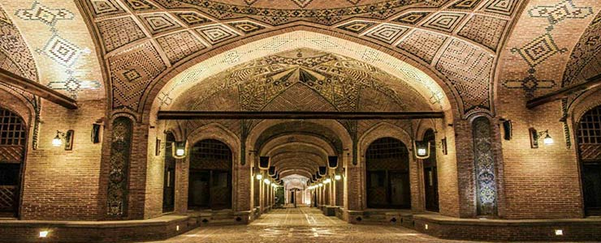
سرای سعدالسلطنه
بزرگترین کاروانسرای سرپوشیده ایران که امروزه یکی از مهمترین جاذبههای گردشگری قزوین محسوب میشود.
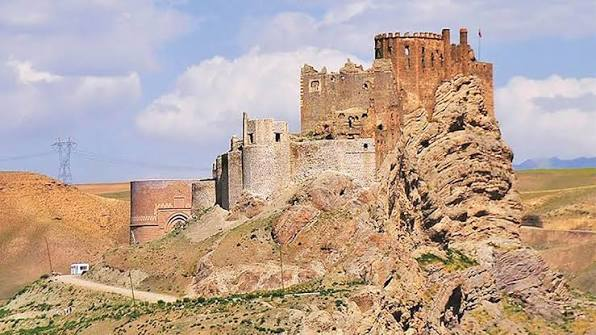
قلعه الموت
قلعه تاریخی حسن صباح که روی کوهی مرتفع ساخته شده و از مشهورترین آثار تاریخی ایران است.

دریاچه اوان
زیباترین دریاچه طبیعی استان قزوین که در منطقه الموت قرار گرفته و مقصد محبوب طبیعتگردان است.
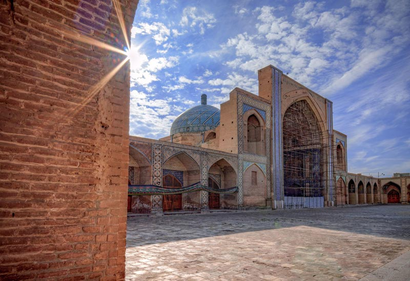
مسجد جامع قزوین
یکی از قدیمیترین مساجد ایران با معماری باشکوه اسلامی و قدمتی بیش از هزار سال.
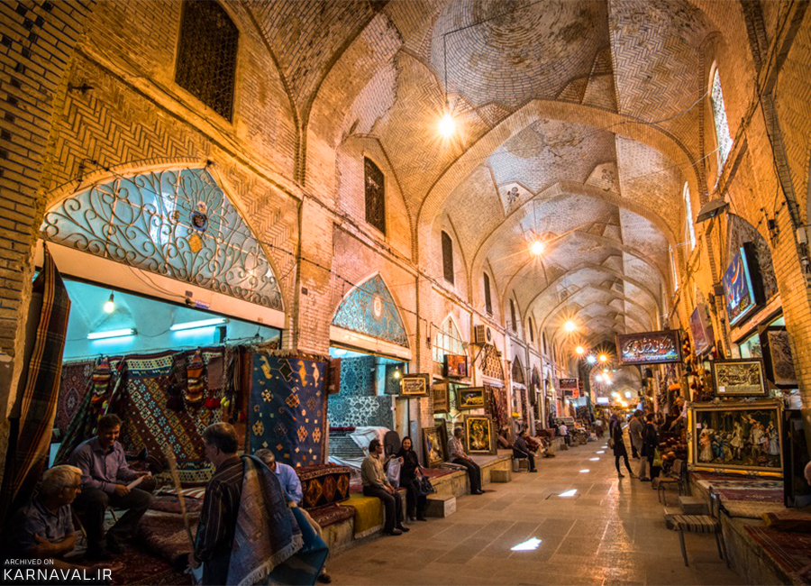
بازار سنتی قزوین
بازاری تاریخی با معماری زیبا که هنوز هم مرکز خرید صنایع دستی و سوغات قزوین است.
🍽 غذاهای محلی قزوین
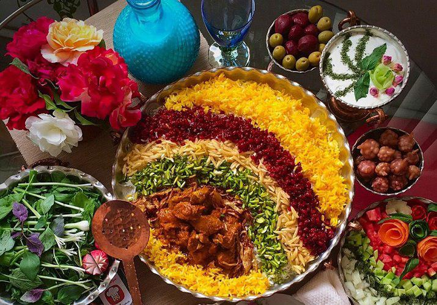
قیمه نثار
مشهورترین غذای قزوین که با برنج، گوشت، خلال بادام، خلال پسته، زرشک و ادویههای معطر تهیه میشود.
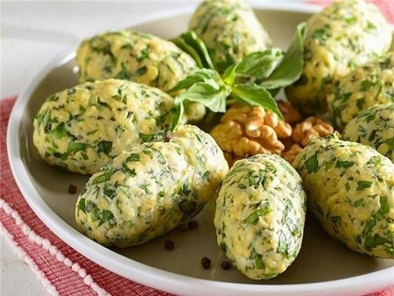
دیماج
غذایی سنتی که با نان خشک، پنیر، گردو، سبزی و پیازداغ تهیه میشود.
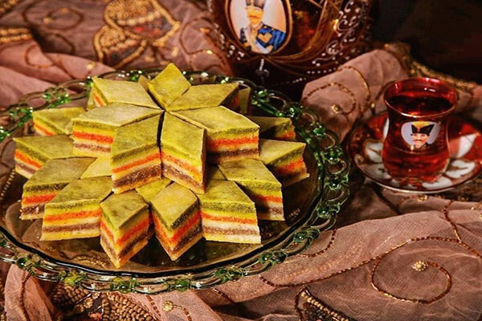
باقلوا
یکی از شیرینیهای معروف قزوین که با مغز پسته، بادام و هل تهیه میشود.
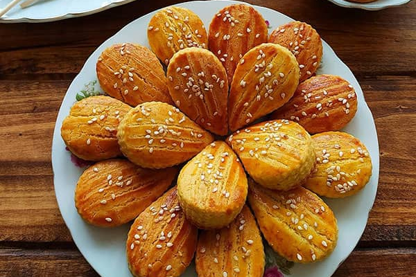
نان چایی
شیرینی سنتی و محبوب قزوین که معمولاً همراه چای سرو میشود.
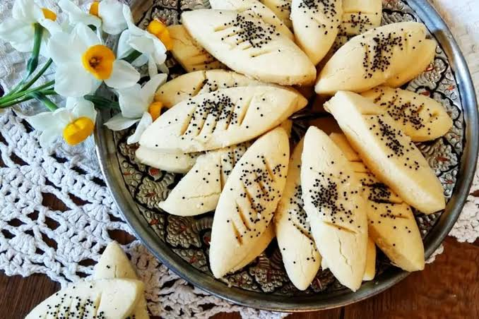
پادرازی
از قدیمیترین شیرینیهای قزوین با طعمی خاص و ماندگاری بالا.
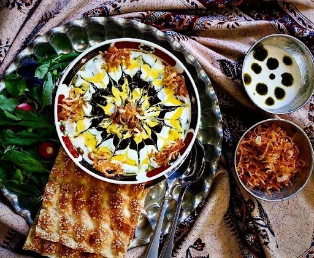
آش دوغ
غذایی محلی و خوشطعم که در برخی مناطق استان قزوین طبخ میشود.
🖼 گالری قزوین
🏛 کاخ چهلستون
نماد تاریخی شهر قزوین و یادگار دوران صفوی.
🏰 قلعه الموت
یکی از مشهورترین قلعههای تاریخی ایران.
🌊 دریاچه اوان
طبیعتی بکر و آرامشبخش در منطقه الموت.
🕌 مسجد جامع
از قدیمیترین مساجد ایران با معماری چشمنواز.
🛍 بازار قزوین
بازاری تاریخی با صنایع دستی و سوغات متنوع.
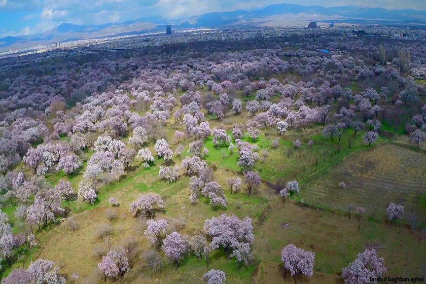
🌳 باغستان سنتی
باغهای قدیمی قزوین که هنوز هم پابرجا هستند.
🎮 مسابقه اطلاعات عمومی
برای شروع مسابقه روی دکمه زیر کلیک کنید.
🗺 نقشه استان قزوین
🌤 آبوهوای قزوین
📜 تاریخ قزوین
قزوین یکی از کهنترین شهرهای ایران است و پیشینه آن به بیش از دو هزار سال پیش میرسد. این شهر به دلیل موقعیت جغرافیایی مناسب، از گذشته یکی از مهمترین مسیرهای ارتباطی کشور بوده است.
در دوره ساسانیان، قزوین برای دفاع از مرزهای شمالی ایران اهمیت زیادی داشت و به عنوان یک شهر نظامی شناخته میشد. پس از ورود اسلام نیز این شهر به رشد خود ادامه داد و به یکی از مراکز مهم علمی، فرهنگی و تجاری تبدیل شد.
مهمترین دوره تاریخی قزوین مربوط به دوران صفویه است. شاه طهماسب اول در سال ۹۵۱ هجری قمری، قزوین را پایتخت ایران قرار داد. در این دوران کاخ چهلستون، مجموعه دولتخانه صفوی، خیابان سپه (نخستین خیابان طراحیشده ایران) و بناهای تاریخی ارزشمند دیگری ساخته شدند.
قزوین همچنین به «پایتخت خوشنویسی ایران» شهرت دارد و هنرمندان بزرگی مانند میرعماد قزوینی از این شهر برخاستهاند. آثار تاریخی، مساجد، بازارهای قدیمی و باغستانهای سنتی، بخشی از میراث ارزشمند این شهر هستند.
امروزه قزوین با داشتن آثار تاریخی، طبیعت زیبا، غذاهای محلی خوشطعم و مردمانی مهماننواز، یکی از مهمترین مقاصد گردشگری ایران به شمار میرود و هر سال گردشگران زیادی از داخل و خارج کشور از آن بازدید میکنند.
💡 حقایق جالب درباره قزوین
🏛 پایتخت صفویان
قزوین حدود ۵۷ سال در دوران شاه طهماسب صفوی، پایتخت ایران بود.
✍️ پایتخت خوشنویسی
قزوین به دلیل پرورش خوشنویسان بزرگ، پایتخت خوشنویسی ایران شناخته میشود.
🏰 قلعه الموت
قلعه الموت یکی از مشهورترین قلعههای تاریخی ایران و محل حکومت حسن صباح بوده است.
🌳 باغستان سنتی
باغستان سنتی قزوین بیش از هزار سال قدمت دارد و یکی از میراث ارزشمند این استان است.
🛣 موقعیت جغرافیایی
قزوین یکی از مهمترین مسیرهای ارتباطی بین تهران و شمالغرب ایران است.
🍽 غذای مشهور
قیمه نثار، معروفترین غذای سنتی قزوین و یکی از غذاهای اصیل ایرانی است.
🏨 بهترین هتلها و اقامتگاههای قزوین
🏛 هتل سنتی خانه بهروزی
یکی از زیباترین اقامتگاههای سنتی قزوین با معماری قاجاری، حیاط دلنشین و دسترسی آسان به جاذبههای تاریخی شهر.
⭐ هتل ایرانیان
هتلی چهار ستاره با امکانات رفاهی مناسب، فضای سبز، رستوران و موقعیت مناسب برای مسافران.
🌿 هتل سنتی نبوی
اقامتگاهی سنتی با فضای تاریخی، اتاقهای زیبا و صبحانه محلی که تجربهای متفاوت از اقامت در قزوین ارائه میدهد.
🏨 هتل البرز
یکی از هتلهای شناختهشده قزوین با امکانات مناسب و دسترسی خوب به مرکز شهر.
🏡 بوتیک هتل ارغوان
هتلی سنتی و آرام با معماری زیبا که برای علاقهمندان به اقامت در بافت تاریخی شهر مناسب است.
🌟 هتل سفیر
هتلی مناسب با قیمت اقتصادی که در نزدیکی بازار سنتی و جاذبههای گردشگری قزوین قرار دارد.
🍽 رستورانها و قنادیهای معروف قزوین
🍖 رستوران اقبالی
یکی از قدیمیترین و معروفترین رستورانهای قزوین که به سرو قیمهنثار و غذاهای سنتی ایرانی شهرت دارد.
🍗 رستوران هوژان
رستورانی محبوب با انواع غذاهای ایرانی، دریایی و محیطی خانوادگی و آرام.
🥘 رستوران شمس
از رستورانهای شناختهشده قزوین که غذاهای سنتی ایرانی را با کیفیت بالا ارائه میدهد.
🍰 قنادی گنج شیرین
یکی از معروفترین قنادیهای قزوین که باقلوا، نان چایی و شیرینیهای سنتی بسیار باکیفیتی دارد.
🥮 قنادی پرستو
از قدیمیترین قنادیهای شهر که به خاطر باقلوای قزوین و شیرینیهای سنتی شهرت زیادی دارد.
☕ کافههای سرای سعدالسلطنه
در مجموعه تاریخی سعدالسلطنه کافهها و رستورانهای سنتی متعددی وجود دارد که فضای بسیار زیبایی برای گردشگران فراهم کردهاند.
🌍 فرصتها و چالشهای استان قزوین
🌟 فرصتهای استان قزوین
- 🏛 وجود آثار تاریخی ارزشمند مانند کاخ چهلستون، قلعه الموت و سرای سعدالسلطنه.
- 🌳 باغستانهای سنتی و طبیعت زیبای استان.
- 🚜 کشاورزی قوی و تولید محصولاتی مانند انگور، پسته و زیتون.
- 🏭 وجود شهرکهای صنعتی و فرصتهای شغلی.
- 🛣 قرار گرفتن در مسیر ارتباطی مهم بین تهران و شمالغرب ایران.
⚠️ چالشهای استان قزوین
- 💧 کمبود منابع آب و کاهش بارندگی.
- 🌫 آلودگی هوا در برخی مناطق صنعتی.
- 🏗 گسترش ساختوساز و تهدید باغستانهای سنتی.
- 🏛 نیاز به حفاظت بیشتر از آثار تاریخی.
- ♻️ حفظ محیطزیست و استفاده درست از منابع طبیعی.
⭐ به سایت ما امتیاز دهید
📖 درباره پروژه
«قزوین با دانش» با هدف معرفی جاذبههای گردشگری، غذاهای محلی، تاریخ و فرهنگ استان قزوین طراحی شده است.
📅 "+now.toLocaleDateString(); }